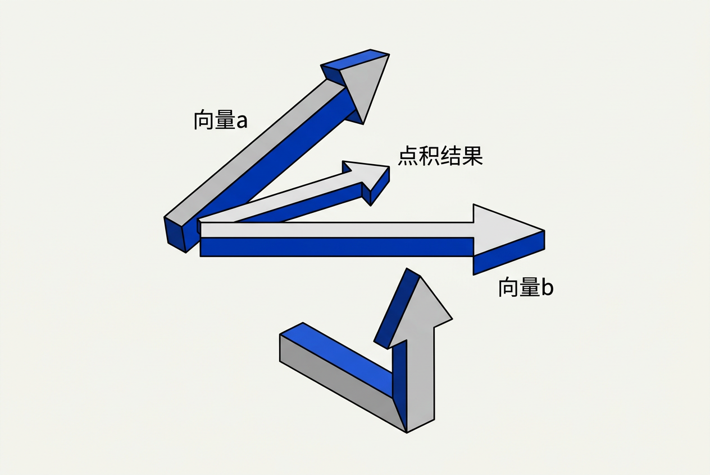
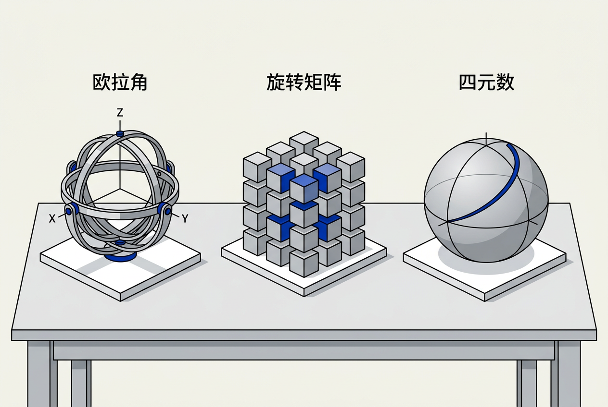

第5章：3D数学基础 — 零基础讲义
讲义说明
本讲义基于 Jason Gregory 所著《Game Engine Architecture Volume I》第4版第5章（3D Math for Games, p.333-386），逐节翻译推导。
本版插画由 ImageGen + Guizang 材质插画标准流程生成。
学习目标
- 理解向量加法、点积、叉积的几何含义和游戏中的应用
- 理解 4×4 变换矩阵的结构和齐次坐标的意义
- 理解四元数是什么、为什么需要它、以及它如何解决欧拉角的万向节锁
- 比较三种旋转表示（欧拉角/矩阵/四元数）的优劣
- 掌握游戏引擎中常见的坐标变换链（局部→世界→相机→屏幕）
5.1 点和向量

5.1.1 点（Point）与向量（Vector）的区别
5.1.1.1 核心概念
| 点（Point） | 向量（Vector） | |
|---|---|---|
| 含义 | 空间中的一个位置 | 从一个位置到另一个位置的方向和距离 |
| 类比 | "图书馆在东经120°北纬30°" | "从这里往东北方向走500米" |
| 运算 | 没有方向，不能加减两点（无意义） | 有方向，可以加减缩放 |
| 坐标系 | 固定在原点上 | 游离（可以沿任意位置平移） |
5.1.1.2 齐次坐标 w 分量
在 3D 图形中，点用 (x, y, z, w=1) 表示，向量用 (x, y, z, w=0) 表示。这看似奇怪的设计有一个巧妙的目的：把平移变换统一到矩阵乘法中。w=0 的向量乘以平移矩阵不受平移影响（这符合"向量没有位置"的特性），w=1 的点则会被平移。这就是齐次坐标的妙用。
5.1.2 向量基本运算
| 运算 | 公式 | 几何含义 | 游戏应用 |
|---|---|---|---|
| 加法 | a + b | 先走 a 再走 b | 力合成（推力+风力） |
| 减法 | b - a | 从 a 指向 b | 目标方向 = enemyPos - playerPos |
| 数乘 | k × v | 缩放向量的长度 | speed × direction = velocity |
| 长度 | |v| | 向量有多长 | 距离 = distance(player, enemy) |
| 归一化 | v / |v| | 变成长度为1的方向 | 标准化方向向量 |
5.1.3 点积（Dot Product）
5.1.3.1 公式与几何意义
公式： a·b = a₁b₁ + a₂b₂ + a₃b₃ = |a||b|cos(θ)
两个单位向量的点积 = 它们夹角的余弦值。cos(0)=1（同向），cos(90)=0（垂直），cos(180)=-1（反向）。
5.1.3.2 游戏中的应用
// 判断敌人是否在玩家前方
Vector3 forward = player.GetForwardVector();
Vector3 toEnemy = (enemy.position - player.position).Normalized();
float dot = Vector3::Dot(forward, toEnemy);
if (dot > 0.5f) // 夹角 < 60°，敌人在前方视野内
// 计算光照强度
float lightIntensity = Vector3::Dot(surfaceNormal, -lightDirection);
// 表面法线和光线方向越接近平行→光照越强5.1.4 叉积（Cross Product）
5.1.4.1 公式与几何意义
a × b 得到一个垂直于 a 和 b的新向量，方向由右手定则确定。|a × b| = |a||b|sin(θ)——两向量构成的平行四边形的面积。
5.1.4.2 游戏中的应用
// 计算表面法线
Vector3 edge1 = p2 - p1;
Vector3 edge2 = p3 - p1;
Vector3 normal = Vector3::Cross(edge1, edge2).Normalized();
// 构建相机坐标系：前×上 = 右方向
Vector3 right = Vector3::Cross(forward, up).Normalized();
Vector3 correctedUp = Vector3::Cross(right, forward).Normalized();5.1.4.3 点积 vs 叉积 速查表
| 点积 | 叉积 | |
|---|---|---|
| 结果 | 标量（一个数） | 向量（有方向） |
| 几何意义 | "有多像同向"（cosθ） | "组成的平面朝哪"（法线方向） |
| 游戏用途 | 前后判断、光照计算、投影 | 法线计算、左右判断、坐标系构建 |
计算 (point - planePoint)·planeNormal 的点积。正数=在正面，负数=在背面，0=恰好在平面上。这是背面剔除（Backface Culling）的基本原理——三角形法线方向背离摄影机则不需要绘制。
5.2 矩阵
5.2.1 4×4 变换矩阵
5.2.1.1 矩阵作为"批量运算器"
矩阵的威力：一次乘法完成"旋转+缩放+平移"三项操作。4×4 齐次变换矩阵的结构：前三列是 3×3 旋转+缩放，第四列是平移。最下一行 [0,0,0,1] 保持齐次坐标。
// 构造世界变换矩阵
Matrix4x4 S = Scale(2.0f, 2.0f, 2.0f); // 缩放到2倍
Matrix4x4 R = RotateY(pi/4); // 绕Y轴旋转45°
Matrix4x4 T = Translate(10, 0, 5); // 平移到(10,0,5)
Matrix4x4 worldMatrix = T * R * S; // 组合=先缩放→再旋转→最后平移
Vector4 worldPos = worldMatrix * localPos; // 将局部坐标变换到世界空间5.2.1.2 矩阵乘法为什么"从右往左读"？
数学约定：矩阵乘法 T*(R*(S*v))——最右边的 S（缩放）最先应用到向量 v 上，然后 R（旋转），最后 T（平移）。类比"穿衣顺序"——先穿内衣（S）、再穿衬衫（R）、最后套外套（T）。
5.2.2 坐标变换链
5.2.2.1 模型→世界→相机→屏幕
局部空间 → [世界矩阵] → 世界空间 → [视图矩阵] → 相机空间 → [投影矩阵] → 裁剪空间 → [透视除法] → NDC → [视口变换] → 屏幕像素
// 四个矩阵连乘——这是一个顶点从模型文件到屏幕像素的全部旅程
Matrix4x4 mvp = projectionMatrix * viewMatrix * worldMatrix;
Vector4 screenPos = mvp * Vector4(modelPos, 1.0f);5.2.3 矩阵的逆
5.2.3.1 为什么需要逆矩阵？
世界矩阵把局部坐标→世界坐标。逆矩阵反过来：世界坐标→局部坐标。如果玩家站在世界(10,0,5)，一个世界坐标(15,0,5)的宝箱相对于玩家在哪？= inv(worldMatrix) × 宝箱世界坐标。
5.3 四元数

5.3.1 为什么需要四元数？
5.3.1.1 欧拉角的"万向节锁"
当你用三个数 (pitch, yaw, roll) 表示旋转时，绕中间轴旋转 90° 会导致另外两个旋转轴重合——你失去了一个旋转自由度。这是数学上的必然结果，不是"某个引擎的 bug"。任何使用欧拉角的系统（相机、骨骼动画）都会受此困扰。
5.3.1.2 四元数的形式
q = w + xi + yj + zk，其中 i²=j²=k²=ijk=-1。实际使用中把它当成 (w, x, y, z) 四个浮点数存储。w 控制旋转角度，x,y,z 控制旋转轴方向。
5.3.2 四元数的优势
5.3.2.1 三大核心优势
| 优势 | 说明 |
|---|---|
| 无万向节锁 | 四元数用四个数表示旋转，天然避免了欧拉角的三轴耦合 |
| SLERP 平滑插值 | 在球面上匀速插值——从姿态A到姿态B的动画过渡极其平滑 |
| 省内存 | 4个数 vs 旋转矩阵的9个数（3×3），对动画系统（每根骨骼、每帧）意味着巨大节省 |
5.3.2.2 四元数的缺点
不直观——你不能看着 (0.707, 0, 0.707, 0) 就说出"这是绕Y轴旋转 90°"。所以编辑器界面通常显示欧拉角（人类可读），内部存储用四元数（数学正确）。
5.4 旋转表示对比
5.4.1 三种方式总览
5.4.1.1 对比表
| 方式 | 数据量 | 直观 | 插值 | 万向节锁 | 使用场景 |
|---|---|---|---|---|---|
| 欧拉角 | 3f | ★★★★★ | 不能 | 有 | 编辑器输入、显示给用户 |
| 旋转矩阵 | 9f | ★★ | 难 | 无 | 渲染管线（MVP矩阵的一部分） |
| 四元数 | 4f | ★★ | SLERP完美 | 无 | 角色动画、相机旋转、骨骼蒙皮 |
5.4.1.2 转换关系
// 三种表示可以互相转换
Quaternion → Matrix4x4: 用于渲染（着色器需要矩阵）
EulerAngles → Quaternion: 编辑器中输入后转为内部四元数
Matrix4x4 → EulerAngles: 提取矩阵中隐含的旋转角度（有歧义，谨慎使用）5.5 坐标空间与变换
5.5.1 三种基本坐标空间
5.5.1.1 局部空间 vs 世界空间 vs 相机空间
| 空间 | 含义 | 类比 |
|---|---|---|
| 局部空间 | 以物体自身为原点 | "方向盘距离座椅50cm"——和车在哪条街无关 |
| 世界空间 | 以世界原点为原点 | "这辆车在长安街100号"——绝对坐标 |
| 相机空间 | 以相机为原点 | "那辆车在我的右前方15米"——相对于观察者 |
5.5.2 骨骼动画中的空间变换
5.5.2.1 骨骼层级链
角色的手腕骨骼位于"模型空间→腰部→脊椎→肩膀→上臂→前臂→手腕"。这是一个变换链——每根骨骼的旋转逐层传递。四元数的 SLERP 在这里至关重要——它让骨骼之间的过渡自然平滑。
5.6 数学库实现
5.6.1 游戏引擎的数学库
5.6.1.1 常见实现选择
| 引擎/库 | 主要类型 | 实现方式 |
|---|---|---|
| Unreal Engine | FVector / FMatrix / FQuat | 自研（大量使用 SSE） |
| Unity | Vector3 / Quaternion / Matrix4x4 | C# 封装 + C++ 底层 SIMD |
| GLM (OpenGL Math) | glm::vec3 / glm::mat4 / glm::quat | 纯头文件 C++，对标 GLSL |
| DirectXMath | XMFLOAT3 / XMMATRIX | 微软官方，SSE/AVX 深度优化 |
5.6.1.2 SIMD 向量化
现代数学库大量使用 SIMD 指令。4×4 矩阵乘法用 SSE 可以提速约 3 倍——因为一次 SSE 操作处理 4 个 float，恰好是一行/一列。引擎数学库的性能直接影响每帧数百万次顶点变换的总耗时。
本章核心洞察
位置、速度、加速度、力、颜色（RGBA）——全都是向量。面向游戏引擎的开发，你不能把向量当成"数学课上的箭头"——它们是你每一行代码都在操作的核心数据类型。"敌人是在我前面还是后面？"就是一次点积。"人物的右手方向是什么？"就是一次叉积。"世界空间中的这个坐标，在屏幕上显示在哪里？"就是一次矩阵链乘。掌握这三种运算的直觉，你就掌握了游戏编程的数学语言。
三条数学准则：
1. 任何时候需要旋转都用四元数存储： 只在编辑器显示和渲染时转换为欧拉角/矩阵，内部永远用四元数
2. 点积判断方向，叉积构造方向： 这是两条贯穿整本引擎的数学操作
3. 矩阵链乘从右往左读： local × world × view × proj，先应用的在最右边
📝 课后练习题（含答案）
a·b = |a||b|cosθ。单位向量点积 = cosθ。0 → 垂直（90°），1 → 同向（0°），-1 → 反向（180°）。
计算 playerForward · (enemyPos - playerPos).Normalized()。dot > 0 → 前方，dot < 0 → 后方。
万向节锁：绕中间轴旋转90°后，另外两个旋转轴重合，丢失一个自由度。四元数避免的原因：它用四维表示三维旋转，旋转是"绕一个轴转一个角"——永远只有一个旋转轴和一个角度，不存在三个独立轴的耦合问题。
vs 欧拉角：无万向节锁、可平滑插值（SLERP）。vs 旋转矩阵：省内存（4f vs 9f）、插值更自然、易于归一化（消除累积误差）。
w=1 表示"点"——用于位置，可被平移。w=0 表示"向量"——用于方向，不受平移影响。这样设计的巧妙之处：平移矩阵只影响 w=1 的行（第四列乘w），w=0 的向量自然不受平移影响——这正是我们想要的几何语义。
Model Matrix → View Matrix → Projection Matrix → Viewport Transform。即：screenPos = viewport( projection( view( world( model( localPos ) ) ) ) )。合在一起：MVP = Projection × View × Model。
每帧数百万次顶点变换（矩阵×向量），每次 4×4 矩阵乘法涉及 16 次乘法和 12 次加法。SIMD（SSE一次性处理4个float）将矩阵乘法速度提升约3倍。这对维持 60fps 至关重要——数学库是整个渲染管线的"发动机"。
因为人类理解"绕X轴转30°"很容易，但无法直观理解四元数(0.966, 0.259, 0, 0)是什么。而内部存储用四元数避免了万向节锁，且动画插值（SLERP）天然平滑。这是"人性化界面 + 数学正确存储"的经典设计模式。
🤖 qAagent 零基础问答区
能。你不需要成为数学家。游戏编程中只需三条核心运算：① 点积——判断前后。② 叉积——计算垂直方向。③ 矩阵乘法——坐标变换。花一个下午理解这三条，比你啃三周线性代数课本有用得多。强烈推荐 3Blue1Brown 的《线性代数的本质》视频系列——17 分钟帮你建立几何直觉。
这是四元数的乘法规则——类似于复数的 i²=-1。不用理解为什么，只需要知道：它定义了一种"四维数的算术"，而这种算术恰好能漂亮地表示三维旋转。类比：你不需理解为什么 e^(iπ)+1=0 才能使用复数解决交流电计算——四元数对旋转也一样，"会用就行"。
核心区别：SIMD 优化。Unreal 的 FVector 底层使用 SSE 指令，一次操作处理多个分量。你的 Vector3 可能是最简单的 struct{float x,y,z;}——功能正确但指令数多 3-4 倍。其他差异：FVector 有完整运算符重载、与 FMatrix/FQuat 的无缝转换、编辑器序列化支持。学习阶段你的 Vector3 完全够用——生产环境用引擎内置类型。
Lambert 光照模型：表面亮度 = 表面法线和光线方向的点积的绝对值。法线和光线完全平行（光从正上方直射）→ cos(0)=1 → 最亮。法线和光线 90°（光贴地擦过）→ cos(90)=0 → 全暗。这就是为什么物体的"迎光面"亮、"背光面"暗——本质上就是一个点积。
SLERP = Spherical Linear Interpolation（球面线性插值）。在四维单位球面上沿最短弧匀速插值。线性插值（LERP）直接对四个分量线性混合——结果不在单位球面上（"不是合法旋转"），需要归一化之后会有速度不均匀的畸变。SLERP 保证了旋转速度恒定平滑——这就是为什么角色动画过渡看起来自然。
使用叉积：cross(forward, toEnemy) 得到垂直于两者的向量。如果结果向量的 y 分量 > 0，敌人在右边；< 0，在左边。这是因为 "前×目标方向" 产生的向量朝上（右手定则），y 分量的正负就告诉你目标在前方的左侧还是右侧。
它把三维世界的"透视效果"编码到一个矩阵中。近处的物体占据屏幕更大区域（符合人眼），远处的物体缩小。背后的数学：把 3D 坐标的 z 分量映射为齐次坐标的 w 分量，硬件自动做透视除法（x/w, y/w）——z 越大（越远），除以的 w 越大，结果越小。这个矩阵是"把三维世界投影到二维屏幕"的唯一桥梁。
三个核心概念 + 两个关键操作：
概念：① 向量=箭头 ② 矩阵=变换器 ③ 四元数=旋转器
操作：① 点积=判断方向关系 ② 矩阵乘法=变换坐标
不必背公式。需要的是直觉——"这个问题用点积还是叉积？"比"点积公式是什么"重要得多。公式可以查，直觉不能。
- 学习目标
- 学习目标
- 5.1 点和向量
- 5.1.1 点（Point）与向量（Vector）的区别
- 5.1.1.1 核心概念
- 5.1.1.2 齐次坐标 w 分量
- 5.1.2 向量基本运算
- 5.1.3 点积（Dot Product）
- 5.1.3.1 公式与几何意义
- 5.1.3.2 游戏中的应用
- 5.1.4 叉积（Cross Product）
- 5.1.4.1 公式与几何意义
- 5.1.4.2 游戏中的应用
- 5.1.4.3 点积 vs 叉积 速查表
- 5.2 矩阵
- 5.2.1 4×4 变换矩阵
- 5.2.1.1 矩阵作为"批量运算器"
- 5.2.1.2 矩阵乘法为什么"从右往左读"？
- 5.2.2 坐标变换链
- 5.2.2.1 模型→世界→相机→屏幕
- 5.2.3 矩阵的逆
- 5.2.3.1 为什么需要逆矩阵？
- 5.3 四元数
- 5.3.1 为什么需要四元数？
- 5.3.1.1 欧拉角的"万向节锁"
- 5.3.1.2 四元数的形式
- 5.3.2 四元数的优势
- 5.3.2.1 三大核心优势
- 5.3.2.2 四元数的缺点
- 5.4 旋转表示对比
- 5.4.1 三种方式总览
- 5.4.1.1 对比表
- 5.4.1.2 转换关系
- 5.5 坐标空间与变换
- 5.5.1 三种基本坐标空间
- 5.5.1.1 局部空间 vs 世界空间 vs 相机空间
- 5.5.2 骨骼动画中的空间变换
- 5.5.2.1 骨骼层级链
- 5.6 数学库实现
- 5.6.1 游戏引擎的数学库
- 5.6.1.1 常见实现选择
- 5.6.1.2 SIMD 向量化
- 本章核心洞察
- 📝 课后练习题（含答案）
- 🤖 qAagent 零基础问答区